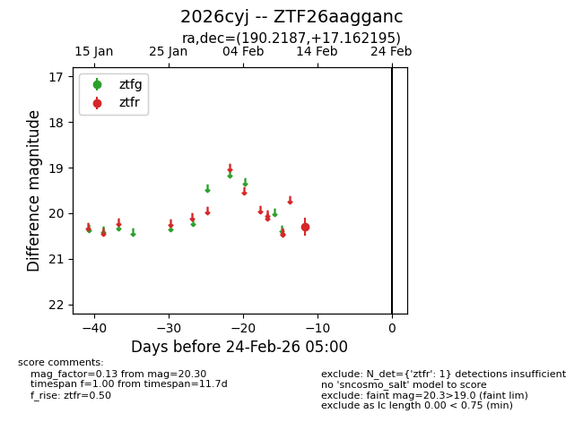
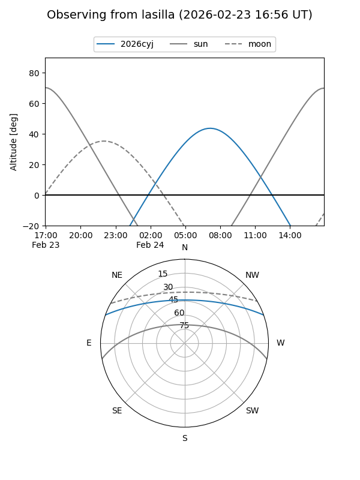
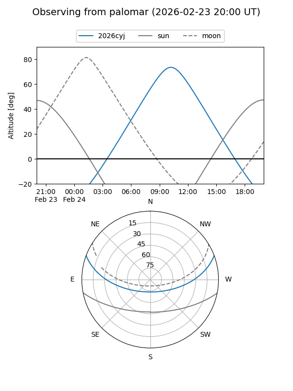

2026cyj
Target 2026cyj at 2026-02-24 09:08
Aliases and brokers:
FINK: link
Lasair: link
ALeRCE: link
TNS: link
YSE: link
alt names
ZTF26aagganc (ztf,fink_ztf)
2026cyj (tns,yse)
Coordinates:
equatorial (ra, dec) = 190.2187,+17.16219
equatorial (HMS+DMS) = 12:40:52.48,+17:09:43.90
galactic (l, b) = (288.6234,+79.73928)
Flags:
Photometry:
last ztfr=20.30
1 ztfr detections
Lightcurve

Visibility


Additional plots